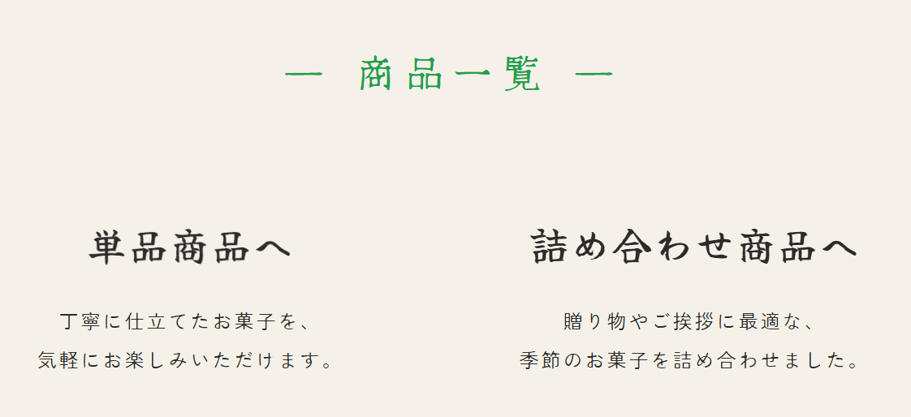

甘彩堂
石川県金沢市にある架空の和菓子屋を想定した、
ブランドサイト兼ECサイトです。
和菓子屋らしい落ち着きや親しみやすさを大切にしながら、
商品の魅力や店舗の想いが伝わるサイトを目指して制作しました。

課題
観光地に店舗を構える老舗和菓子屋として、店舗の魅力をオンラインでも伝え、
安定した購入につなげるための課題を整理しました。

観光客に売上が左右されやすい
金沢の観光地にある店舗として、来店数が観光シーズンに左右されやすく、
冬場などの閑散期には売上が不安定になる課題を設定しました。

オンライン販売の魅力が伝わりにくい
オンライン販売は行っているものの、商品写真やサイト全体の見せ方が弱く、
ブランドの世界観や商品の魅力が十分に伝わっていない状態を想定しました。

スマートフォンで選びにくい
商品情報や購入導線が整理されていないことで、
スマートフォンから閲覧したユーザーが迷わず商品を選びにくいという課題を設定しました。
解決方針
課題を解決するために、ブランドの世界観を伝えることと、
商品を選びやすく購入につなげることの両方を意識して設計しました。
知る
店舗の歴史や和菓子作りへの想いを掲載し、
初めて訪れたユーザーにも甘彩堂の雰囲気や
信頼感が伝わる構成にしました。
探す
「今月のおすすめ」や商品一覧を配置し、
季節の商品や目的に合った商品を
見つけやすい導線を意識しました。
選ぶ
商品カードに価格・説明・カテゴリを付与し、
複数の商品を比較しながら
選びやすいUIを目指しました。
贈る
ギフト需要にも対応できるよう、
梱包/送料/贈答シーンに関する情報を整理し、
安心して購入できる導線を意識しました。
デザインのポイント
和菓子屋らしい柔らかさや親しみやすさに加え、
老舗としての安心感や程よい高級感が伝わるデザインを意識しました。
color
color
color
落ち着いた配色
背景にはクリーム系の色を使用し、
アクセントには緑を取り入れることで、
自然で落ち着いた印象を表現しました。

余白を活かした見せ方
情報を詰め込みすぎず、
余白を多めに取ることで
和菓子の上品さや老舗らしい落ち着きを
感じられるレイアウトにしました。
ブランドの想いを伝える構成
商品だけでなく、店舗の歴史や
和菓子作りへの想いを載せ、
甘彩堂らしい信頼感やこだわりが
伝わる構成にしました。